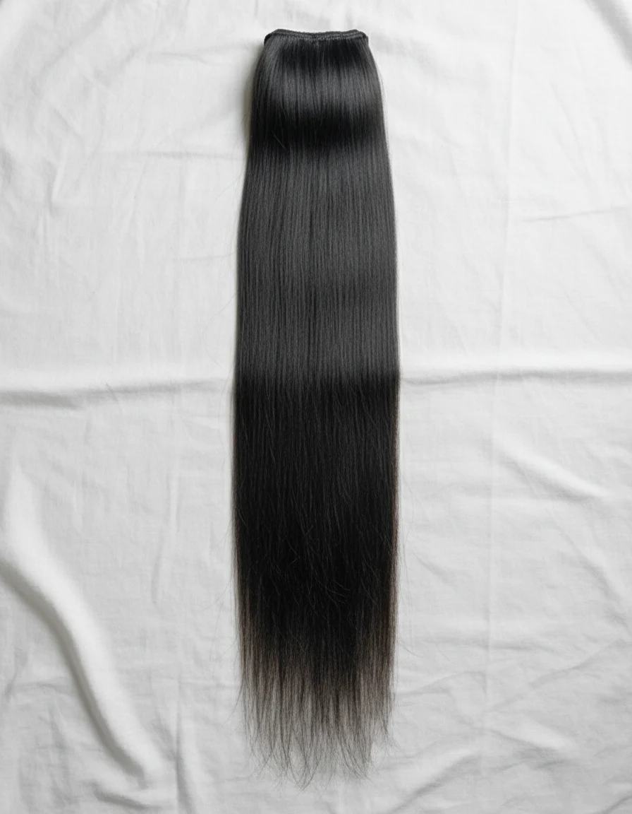

Indian hair bundles are wefted sections of hair used to add length, volume, and texture to natural hair. The two main weft types are machine weft and hand-tied weft, each suited to different installation needs. Indian hair bundles are available in natural straight, wavy, and curly textures. Choosing the right bundle length, quantity, and weft type helps create a fuller, natural-looking, and long-lasting install.
What are Hair Bundles and Wefts?
When you're exploring hair extensions, you'll frequently encounter the term "hair bundles." Simply put, hair bundles are sections of hair that are typically pre-packaged, usually weighing around 3.5 to 4 ounces (about 100 grams) each. They are designed to be sewn onto cornrows or applied using other installation methods to add length, volume, or a new texture to your natural hair.
The foundation of any good hair bundle is its weft. A weft is essentially a track where individual strands of hair are sewn or bonded together to create a continuous piece. This construction is crucial for how the hair is installed and how well it holds up over time. Understanding different weft types is key to a successful and long-lasting install, especially when selecting high-quality weft bundles for professional or personal use.
Types of Weft Construction: Machine Weft vs. Hand-Tied Weft

The way hair is attached to the weft significantly impacts its durability, flexibility, and installation method. There are two primary types of weft construction for Indian hair bundles:
Machine Weft
- How it's Made: As the name suggests, machine wefts are created by a sewing machine. Strands of hair are fed through a machine that stitches them tightly onto a track.
- Pros:
- Durability: Machine wefts are typically very strong and less prone to shedding due to the dense, machine-stitched construction.
- Affordability: Generally more cost-effective to produce, making them a more budget-friendly option.
- Easy to Cut: You can cut machine wefts to fit your head size without worrying about the hair unraveling excessively, making them versatile for various install patterns.
- Cons:
- Thicker: The machine stitching can result in a slightly thicker weft line, which might be a bit bulkier or harder to lay completely flat for very intricate installs.
- Less Flexible: They are less pliable than hand-tied wefts, meaning they might not contour to the head as seamlessly in certain areas.
- Ideal For: Those seeking durable, cost-effective bundles for full weaves or partial installs where cutting wefts is common.
Hand-Tied Weft
- How it's Made: Hand-tied wefts are meticulously crafted by hand. Skilled artisans tightly tie individual hair strands onto a very thin, flexible string or cord.
- Pros:
- Ultra Thin & Flat: Hand-tied wefts are incredibly thin and lie exceptionally flat against the scalp, creating a seamless and natural-looking install with minimal bulk.
- Lightweight: They feel incredibly lightweight and comfortable.
- Flexible: Their flexibility allows them to conform perfectly to the curves of the head, making them ideal for precise placement.
- Cons:
- More Expensive: The labor-intensive process makes hand-tied wefts significantly more expensive.
- Cannot Be Cut: Crucially, hand-tied wefts should NEVER be cut. Cutting them will cause the weft to unravel, leading to excessive shedding. If they are too long for a track, you must fold them or loop them back.
- Delicate: While durable, they require careful handling during installation to avoid damaging the delicate weft.
- Ideal For: Micro-weaves, partial installs, or anyone desiring the flattest, most undetectable weave possible, and willing to invest more.
The Natural Textures of Indian Hair Bundles
One of the most appealing aspects of authentic Indian hair bundles is their natural, untouched textures. Unlike hair that's been chemically or steam-processed to achieve uniform patterns, Indian hair comes directly from donors with inherent variations. You'll typically find three main natural textures:
Natural Straight
- Characteristics: This isn't bone-straight hair that you'd get from a flat iron. Instead, natural straight Indian hair has a beautiful, subtle body wave or slight curve to it. It has a natural luster and a silky, fine to medium denier. It's incredibly soft and moves freely.
- Styling Versatility: While naturally straight, it holds curls and waves exceptionally well when heat-styled. It also presses beautifully bone-straight for a sleek look. When washed, it will revert to its natural subtle wave.
- Maintenance: Relatively low maintenance. Requires regular washing and conditioning.
Natural Wavy
- Characteristics: This texture showcases soft, flowing waves that range from loose, relaxed waves to more defined "body wave" patterns. The waves are inherent to the hair and give it a natural bounce and volume.
- How it Looks: Provides a soft, romantic look with natural movement. It's perfect for adding volume without too much curl.
- Maintenance: Easy to manage. Can be worn in its natural wavy state for a beachy look, or easily straightened or curled for different styles. Minimal product is needed to enhance the wave pattern.
Natural Curly
- Characteristics: Indian hair offers a variety of beautiful natural curl patterns, often ranging from loose, bouncy curls (sometimes referred to as "deep wave" or "loose curly") to more defined, tighter curls ("kinky curly" is less common but can occur). These curls are organic and authentic, not manufactured.
- Curl Patterns: Expect varied curl patterns within the bundles, reflecting the natural diversity of human hair. This adds to its authentic appeal.
- Care: Curly hair generally requires more moisture and specific care to maintain its curl definition and prevent frizz. Co-washing (conditioner-only washing) and using leave-in conditioners and curl-defining products are recommended. It's also best to air dry or use a diffuser to maintain the curl integrity.
Choosing the Right Lengths and Quantities
The number of bundles and the lengths you need will depend on your desired look, the texture of the hair, and the length of the bundles.
- For Shorter Lengths (10"-14"): Usually, 2 bundles are sufficient for a full, voluminous look.
- For Medium Lengths (16"-22"): 3 bundles are typically recommended for a full sew-in.
- For Longer Lengths (24" and up): You will likely need 4 or more bundles for a complete and full appearance, as hair strands get thinner as they get longer.
- Curly Textures: Often appear shorter than they are due to the curl pattern. If you want a specific length when stretched, consider going up an inch or two compared to straight hair. Curly hair also tends to be fuller, so you might need slightly fewer bundles than straight hair of the same length for a similar density.
- Adding a Closure or Frontal: If you're using a closure or frontal, you might need one less bundle, especially for shorter to medium lengths, as these pieces cover a significant portion of the crown.
Always consider your head size and desired fullness. When in doubt, it's usually better to have slightly more hair than not enough!
Why Our Indian Hair Bundles Stand Out
At Tressley Hair, we are committed to providing you with the highest quality Indian hair bundles on the market. Our dedication to excellence ensures that every bundle you receive meets superior standards:
- 100% Raw & Cuticle Aligned: We specialize in sourcing raw Indian hair directly from single donors, ensuring all cuticles are intact and aligned in the same direction. This is the secret to our bundles' unparalleled smoothness, natural luster, and incredible longevity.
- Minimal Shedding & No Tangling: Thanks to our meticulous weft construction (whether machine or hand-tied) and the cuticle-aligned nature of our hair, you'll experience minimal to no shedding and virtually no tangling, making your hair easy to manage and style.
- Authentic Natural Textures: We embrace the natural beauty of Indian hair, offering bundles with genuine natural straight (with body), wavy, and curly textures. No two bundles are exactly alike, reflecting their authentic, unprocessed origin.
- Exceptional Durability: Our bundles are built to last. With proper care, they can be reused multiple times, making them a wise investment in your beauty.
- Ethically Sourced: We pride ourselves on ethical sourcing practices, ensuring that our hair is collected responsibly and respectfully from temple donations.
Ready to experience the ultimate in hair extensions? Explore our collection of premium Indian Hair Bundles today and find the perfect weft type and natural texture to achieve your dream look!
Freqently Asked Questions
1. What are Indian hair bundles?
Indian hair bundles are sections of human hair sewn into a continuous weft track. They can be installed using sew-ins and other extension methods to add length, volume, or texture.
2. What is the difference between machine weft and hand-tied weft?
Machine wefts are stronger, thicker, and more affordable, while hand-tied wefts are thinner, lighter, and more flexible. Hand-tied wefts are ideal for flatter, more seamless installations but should not be cut.
3. How many Indian hair bundles do I need for a full sew-in?
For medium lengths around 16-22 inches, three bundles are typically recommended. Longer lengths of 24 inches or more may require four or more bundles for adequate fullness.
4. What natural textures are available in Indian hair bundles?
Indian hair bundles commonly come in natural straight, wavy, and curly textures. Natural straight hair may have a subtle body wave, while wavy and curly textures offer more defined movement and volume.